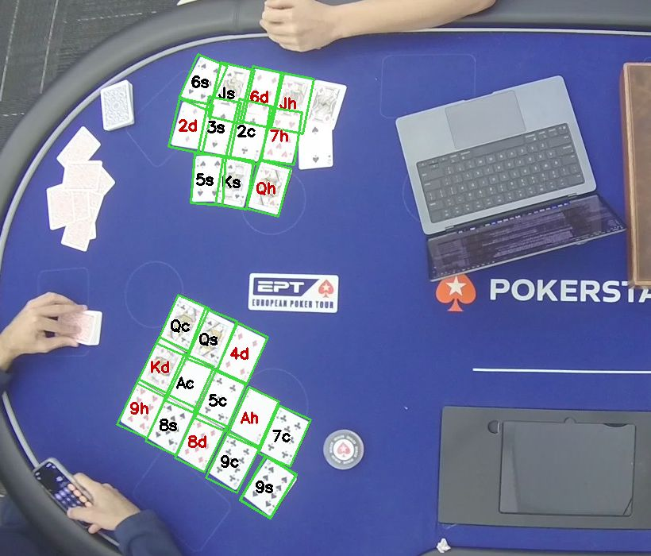
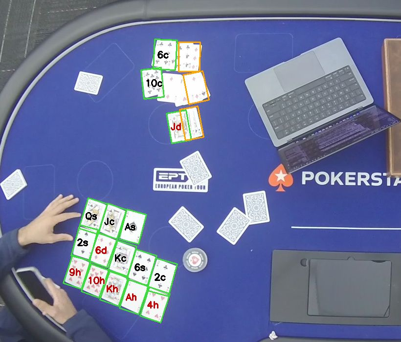
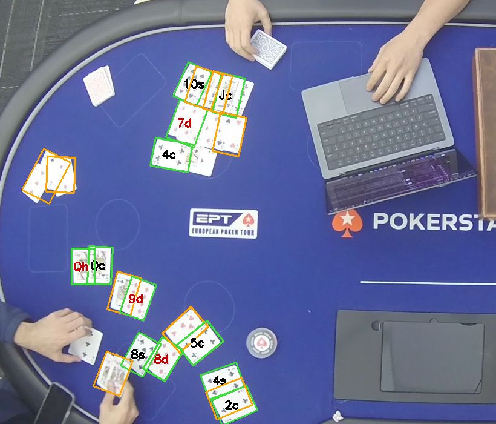
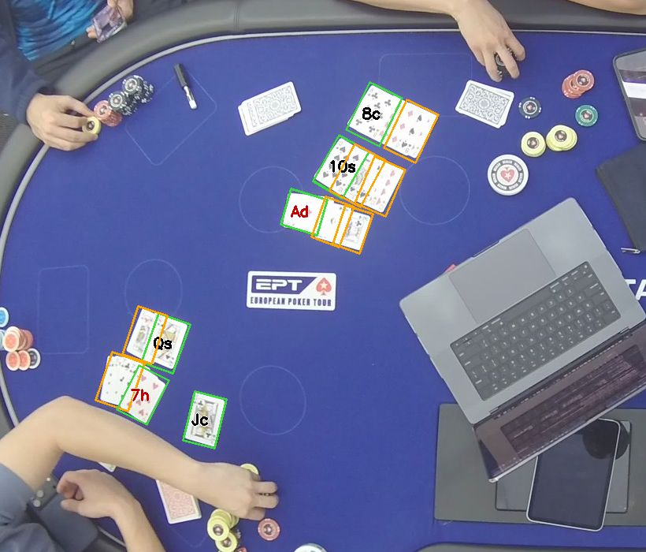
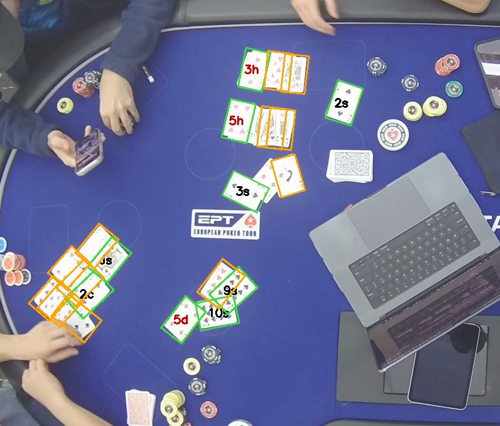
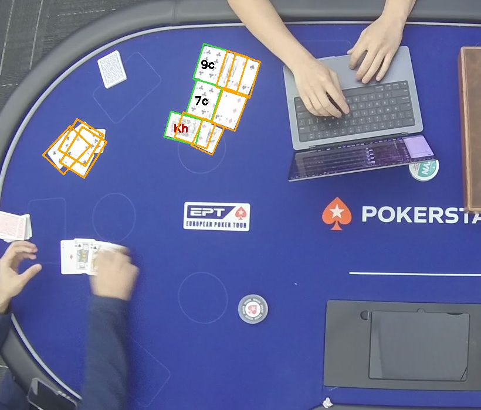
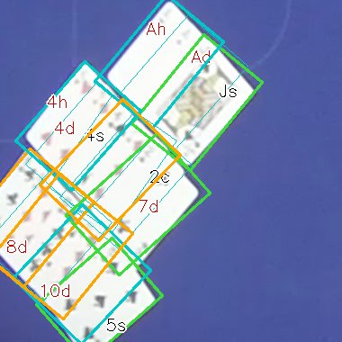
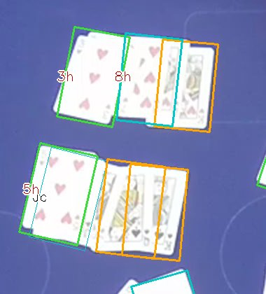

OFC card vision
Face-up cards on office-3's overhead camera, found and named one frame at a time. The reader would rather say nothing than name the wrong card. Every number below comes from two sessions that were kept out of training: 18:36–19:12 EST on Nov 23 (two players) and 00:23–00:33 EST on Nov 24 (three players).
Confidence gate
A view is named only if the classifier's top card clears the probability, beats the runner-up by 0.3, and both 180° turns of the crop agree. The bold row is the setting the reader ships with.
| Probability | Named | Wrong | Wrong cards |
|---|---|---|---|
| 0.5 | 98.0% | 10 | 8♠→7♠ ×2, 2♣→3♣ ×2, 8♦→7♦, 7♣→8♣, 7♣→6♣, 5♠→5♦, 3♣→5♥, 2♣→5♠ |
| 0.7 | 96.6% | 2 | 7♣→6♣, 2♣→3♣ |
| 0.8 | 96.0% | 0 | — |
| 0.9 | 93.6% | 0 | — |
Held-out frames

Nov 23 18:52:12 EST · end of hand · 24 cards found, 24 named 
Nov 23 18:42:10 EST · 19 found, 16 named 
Nov 23 18:54:12 EST · 21 found, 12 named; overlapped cards stay unnamed 
Nov 24 00:28:08 EST · three players · 13 found, 6 named 
Nov 24 00:32:09 EST · fanned rows show only corners · 21 found, 9 named 
Nov 23 19:04:14 EST · 11 found, 3 named
Covered cards
An OFC card never moves once it is placed, so a card named while it was fully visible keeps its name after later cards are fanned over it. The reader keeps the table for the whole hand. Each card is anchored where it lies, stays on the table while other cards cover it, and appears only once per hand. A view that looks like a different card says nothing.
| Cards on the table at hand end | Three players (fans) | Two players |
|---|---|---|
| Named from the current view | 33 / 70 (47%) | 282 / 384 (73%) |
| Named with the hand state | 51 / 70 (73%) | 330 / 384 (86%) |
Same held-out sessions, 3 and 17 hands. No wrong names were found among 28,192 reference views or in an eye check of every covered card it named. Cards laid down already fanned, never seen whole, stay unnamed. A strip reader for them was tried but not shipped, because its reads can't be checked at this resolution.

Nov 24 00:32:05 EST · one player's rows · 9 boxes: 3 named from this view, 6 with the hand state, plus 5 hidden cards named earlier 
Nov 24 00:32:05 EST · rows laid down already fanned: the court cards underneath were never seen whole and stay unnamed
How it works
A card-body detector borrowed from an earlier poker-table project, unchanged, finds cards on this deck without retraining. A small classifier trained on 51,000 views from about 3.5 hours of this table names the card or says it isn't one. Training labels came from hand-checked court cards and aces, and confident tracks of number cards that lay still on the table. Recipe and scripts: ofc/vision.